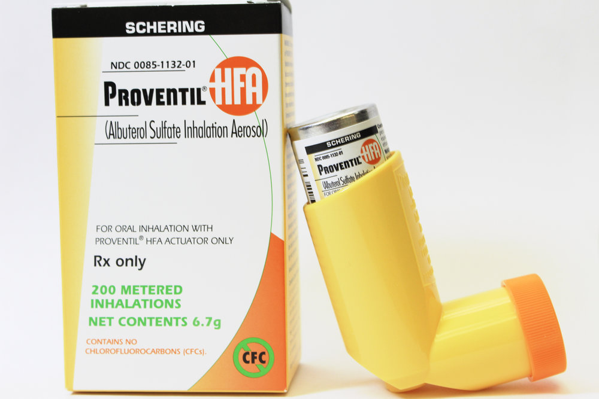

Asthma is a condition in which your airways narrow and swell and produce extra mucus.
This can make breathing difficult and trigger coughing, wheezing and shortness of breath.
For some people, asthma is a minor nuisance. For others,
it can be a major problem that interferes with daily activities
and may lead to a life-threatening asthma attack.
Asthma can't be cured, but its symptoms can be controlled.
Because asthma often changes over time,
it's important that you work with your doctor to track your signs and symptoms
and adjust treatment as needed.
Symptoms.
fatigue
Chest tightness or pain
anxiousness or panic
Shortness of breath
A whistling or wheezing sound when exhaling (wheezing is a common sign of asthma in children)
Trouble sleeping caused by shortness of breath, coughing or wheezing
Quick-relief asthma medicines may cause these side effects:
Anxiety.
Tremor (your hand or another part of your body may shake).
Restlessness.
Headache.
Fast and irregular heartbeats. Call your doctor right away if you have this side effect..

Diagnosis
There’s no single test or exam that will determine if you or your child has asthma.
Instead, your doctor will use a variety of criteria to determine
if the symptoms are the result of asthma.
The following can help diagnose asthma:-
Health history. If you have family members with the breathing disorder,
your risk is higher. Alert your doctor to this genetic connection.
Physical exam. Your doctor will listen to your breathing with a stethoscope.
You may also be given a skin test to look for signs of an allergic reaction,
such as hives or eczema. Allergies increase your risk for asthma.
Breathing tests. Pulmonary function tests (PFTs) measure airflow into and out of your lungs.
For the most common test, spirometry, you blow into a device that measures the speed of the air.
You could be having a serious allergic reaction
and may need immediate treatment in hospital.
Triggers
Certain conditions and environments may also trigger symptoms of asthma.
The list of possible causes and triggers is extensive. Triggers include:
Illness. Respiratory illnesses such as viruses, pneumonia,
and the flu can trigger asthma attacks.
Exercise. Increased movement may make breathing more difficult.
Irritants in the air. People with asthma may be sensitive to irritants,
such as chemical fumes, strong odors, and smoke.
Allergens. Animal dander, dust mites, and pollen are just
a few examples of allergens that can trigger symptoms.
Extreme weather conditions. Conditions such as very high humidity or low temperatures may trigger asthma.
Emotions. Shouting, laughing, and crying may trigger an attack.
Prevention
Because researchers have yet to identify the exact cause of asthma, it’s challenging to know how to prevent the inflammatory condition.
However, more information is known about preventing asthma attacks. These strategies include:
Avoiding triggers. Steer clear of chemicals, smells, or products that have caused breathing problems in the past.
Reducing exposure to allergens. If you’ve identified allergens, such as dust or mold, that trigger an asthma attack, avoid them as best you can.
Getting allergy shots. Allergen immunotherapy is a type of treatment that may help alter your immune system. With routine shots, your body may become less sensitive to any triggers you encounter..
Taking preventive medication. Your doctor may prescribe medication for you to take on a daily basis. This medication may be used in addition to the one you use in case of an emergency.
increased heart rate.
Management
In addition to using maintenance medications, you can take steps each day to help make yourself healthier and reduce your risk for asthma attacks. These include:
The symptoms of an exacerbation may include:
Eating a healthier diet. Eating a healthy, balanced diet can help improve your overall health..
Maintaining a healthy weight. Asthma tends to be worse in people with overweight and obesity. Losing weight is healthy for your heart, your joints, and your lungs..
Quitting smoking. Irritants such as cigarette smoke can trigger asthma and increase your risk for COPD..
Exercising regularly. Activity can trigger an asthma attack, but regular exercise may actually help reduce the risk of breathing problems.
Managing stress. Stress can be a trigger for asthma symptoms. Stress can also make stopping an asthma attack more difficult.
Exacerbations.
When your asthma symptoms get progressively worse, it’s known as an exacerbation, or an asthma attack.
It becomes increasingly difficult to breathe because your airways are swollen and your bronchial tubes have narrowed.
The symptoms of an exacerbation may include:
hyperventilation.
cough.
wheezing.
shortness of breath.
increased heart rate.
agitation.
Treatment
Treatments for asthma fall into three primary categories:
breathing exercises
These exercises can help you get more air into and out of your lungs. Over time,
this may help increase lung capacity and cut down on severe asthma symptoms.
Your doctor or an occupational therapist can help you learn these breathing exercises for asthma.
quick-acting treatments.
If you think that someone you know is having an asthma attack,
tell them to sit them upright and assist them in using their rescue inhaler or nebulizer.
Two to six puffs of medication should help ease their symptoms.
If symptoms persist for more than 20 minutes,
and a second round of medication doesn’t help, seek emergency medical attention.
If you frequently need to use quick-relief medications,
you should ask your doctor about another type of medication for long-term asthma control.
long-term asthma control medications.
These medications, taken daily, help reduce the number and severity of your asthma symptoms, but they don’t manage the immediate symptoms of an attack.
Long-term asthma control medications include the following:
Anti-inflammatories. Taken with an inhaler, corticosteroids and other anti-inflammatory medications help reduce swelling and mucus production in your airwaves, making it easier to breathe.
Anticholinergics. These help stop your muscles from tightening around your airwaves. They’re usually taken daily in combination with anti-inflammatories.
Long-acting bronchodilators. These should only be used in combination with anti-inflammatory asthma medications.
Biologic therapy drugs. These new, injectable medications may help people with severe asthma.